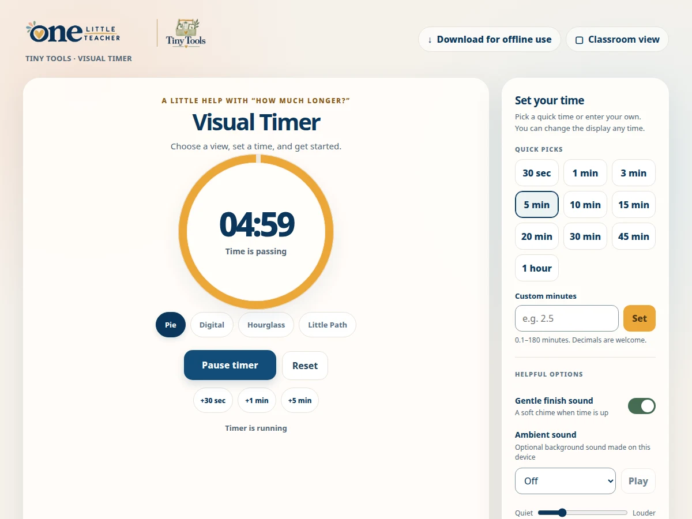

Routines
Visual Timer
Display a countdown in Pie, Digital, Hourglass or Little Path view.
Free · Offline-friendly
Ways to use it
- Make remaining time visible during classroom routines.
How to use it
- Choose a display and a quick time or custom duration.
- Start the timer and use pause or reset as needed.
- Choose Classroom view for a larger display.
Practical details
Custom times range from 0.1 to 180 minutes. Finish sound and ambient sound are optional.
Explore together
Choose the setup that fits your lesson or classroom routine.